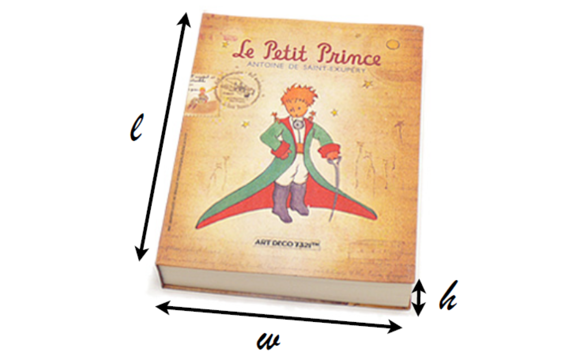
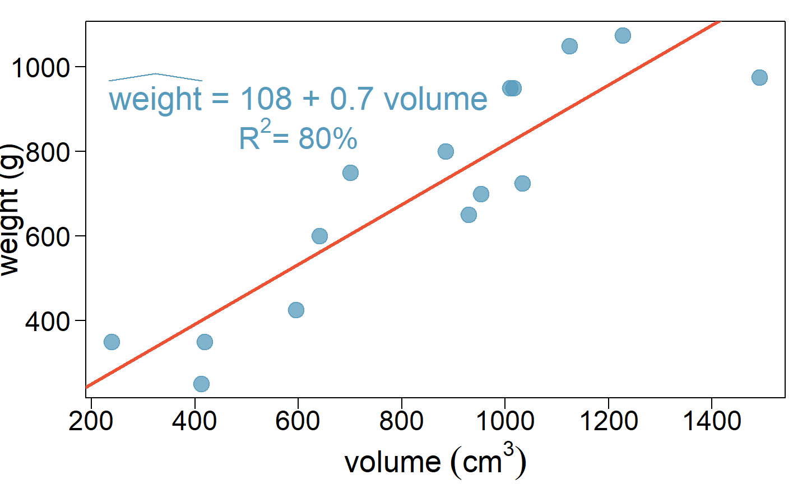
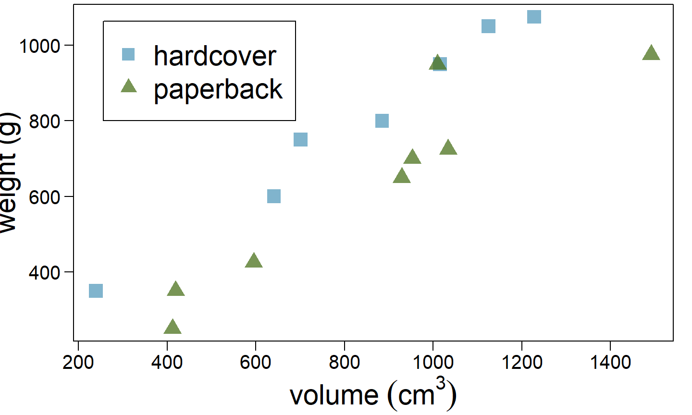
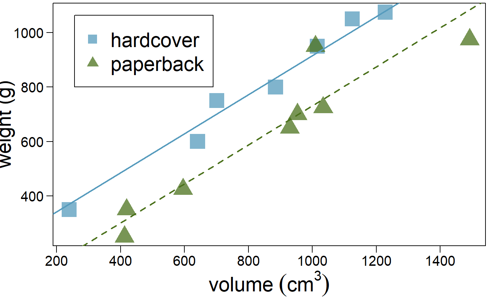
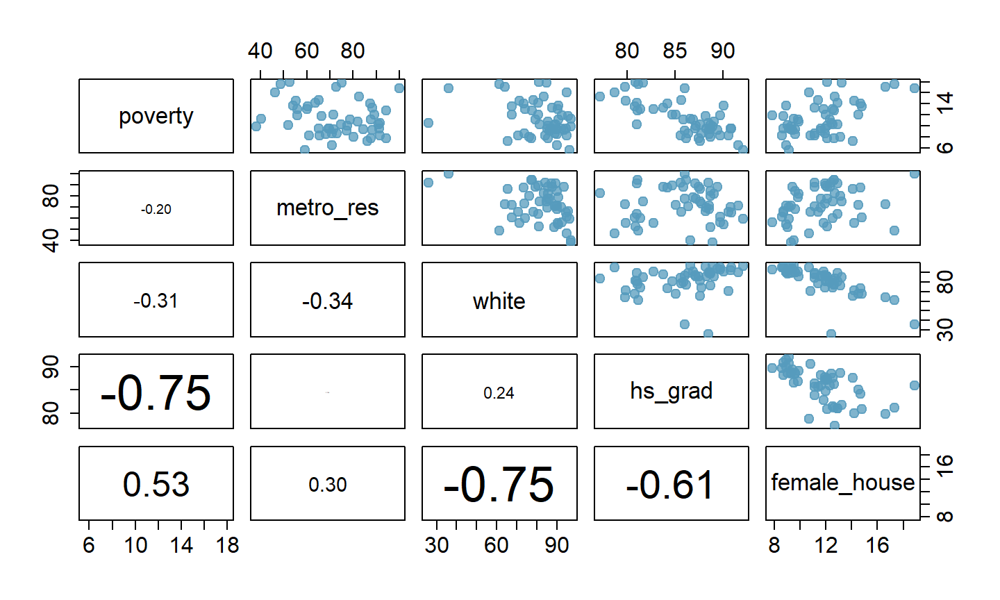
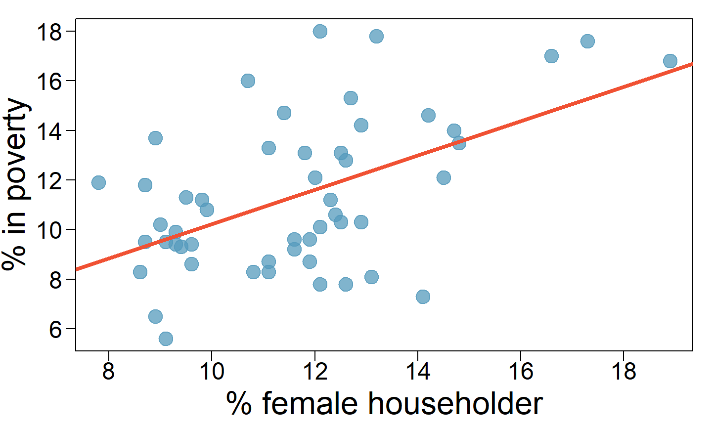

These notes use content from OpenIntro Statistics Slides by
Mine Cetinkaya-Rundel.
These notes use content from OpenIntro Statistics Slides by
Mine Cetinkaya-Rundel.
Simple linear regression: Bivariate - two variables: \(y\) and \(x\).
Multiple linear regression: Multiple variables: \(y\) and \(x_1, x_2, \cdots\)
\[\widehat{poverty} = 11.17 + 0.38 \times west\]
Explanatory variable: region, reference level: east
Intercept: The estimated average poverty percentage in eastern states is 11.17%
This is the value we get if we plug in \(\color{red}{0}\) for the explanatory variable.
Slope: The estimated average poverty percentage in western states is 0.38% higher than eastern states.
Then, the estimated average poverty percentage in western states is 11.17 + 0.38 = 11.55%.
This is the value we get if we plug in \(\color{red}{1}\) for the explanatory variable
Which region (northeast, mid-west, west, or south) is the reference level?
\[ \begin{eqnarray*} \hline & Estimate & Std. Error & t value & Pr(>|t|) \\ \hline (Intercept) & 9.50 & 0.87 & 10.94 & 0.00 \\ region4midwest & 0.03 & 1.15 & 0.02 & 0.98 \\ region4west & 1.79 & 1.13 & 1.59 & 0.12 \\ region4south & 4.16 & 1.07 & 3.87 & 0.00 \\ \hline \end{eqnarray*} \]
Which region (northeast, mid-west, west, or south) is the reference level?
\[ \begin{eqnarray*} \hline & Estimate & Std. Error & t value & Pr(>|t|) \\ \hline (Intercept) & 9.50 & 0.87 & 10.94 & 0.00 \\ region4midwest & 0.03 & 1.15 & 0.02 & 0.98 \\ region4west & 1.79 & 1.13 & 1.59 & 0.12 \\ region4south & 4.16 & 1.07 & 3.87 & 0.00 \\ \hline \end{eqnarray*} \]
Which region (northeast, midwest, west, or south) has the lowest poverty percentage?
\[ \begin{eqnarray*} \hline & Estimate & Std. Error & t value & Pr(>|t|) \\ \hline (Intercept) & 9.50 & 0.87 & 10.94 & 0.00 \\ region4midwest & 0.03 & 1.15 & 0.02 & 0.98 \\ region4west & 1.79 & 1.13 & 1.59 & 0.12 \\ region4south & 4.16 & 1.07 & 3.87 & 0.00 \\ \hline \end{eqnarray*} \]
Which region (northeast, midwest, west, or south) has the lowest poverty percentage?
\[ \begin{eqnarray*} \hline & Estimate & Std. Error & t value & Pr(>|t|) \\ \hline (Intercept) & 9.50 & 0.87 & 10.94 & 0.00 \\ region4midwest & 0.03 & 1.15 & 0.02 & 0.98 \\ region4west & 1.79 & 1.13 & 1.59 & 0.12 \\ region4south & 4.16 & 1.07 & 3.87 & 0.00 \\ \hline \end{eqnarray*} \]
\[ \begin{eqnarray*} \hline & weight (g) & volume (cm^\text{3}) & cover \\ \hline 1 & 800 & 885 & hc \\ 2 & 950 & 1016 & hc \\ 3 & 1050 & 1125 & hc \\ 4 & 350 & 239 & hc \\ 5 & 750 & 701 & hc \\ 6 & 600 & 641 & hc \\ 7 & 1075 & 1228 & hc \\ 8 & 250 & 412 & pb \\ 9 & 700 & 953 & pb \\ 10 & 650 & 929 & pb \\ 11 & 975 & 1492 & pb \\ 12 & 350 & 419 & pb \\ 13 & 950 & 1010 & pb \\ 14 & 425 & 595 & pb \\ 15 & 725 & 1034 & pb \\ \hline \end{eqnarray*} \]

The scatter plot shows the relationship between weights and volumes of books as well as the regression output. Which of the below is correct?

The scatter plot shows the relationship between weights and volumes of books as well as the regression output. Which of the below is correct?

- The correlation between weight and volume is \(R = 0.80^2 = 0.64\).
- The model underestimates the weight of the book with the highest volume.
## ## Call: ## lm(formula = weight ~ volume, data = allbacks) ## ## Residuals: ## Min 1Q Median 3Q Max ## -189.97 -109.86 38.08 109.73 145.57 ## ## Coefficients: ## Estimate Std. Error t value Pr(>|t|) ## (Intercept) 107.67931 88.37758 1.218 0.245 ## volume 0.70864 0.09746 7.271 6.26e-06 *** ## --- ## Signif. codes: 0 '***' 0.001 '**' 0.01 '*' 0.05 '.' 0.1 ' ' 1 ## ## Residual standard error: 123.9 on 13 degrees of freedom ## Multiple R-squared: 0.8026, Adjusted R-squared: 0.7875 ## F-statistic: 52.87 on 1 and 13 DF, p-value: 6.262e-06
Can you identify a trend in the relationship between volume and weight of hardcover and paper books?

Can you identify a trend in the relationship between volume and weight of hardcover and paper books?
Paperbacks generally weight less than hardcover books after controlling for the book’s volume.

## ## Call: ## lm(formula = weight ~ volume + cover, data = allbacks) ## ## Residuals: ## Min 1Q Median 3Q Max ## -110.10 -32.32 -16.10 28.93 210.95 ## ## Coefficients: ## Estimate Std. Error t value Pr(>|t|) ## (Intercept) 197.96284 59.19274 3.344 0.005841 ** ## volume 0.71795 0.06153 11.669 6.6e-08 *** ## coverpb -184.04727 40.49420 -4.545 0.000672 *** ## --- ## Signif. codes: 0 '***' 0.001 '**' 0.01 '*' 0.05 '.' 0.1 ' ' 1 ## ## Residual standard error: 78.2 on 12 degrees of freedom ## Multiple R-squared: 0.9275, Adjusted R-squared: 0.9154 ## F-statistic: 76.73 on 2 and 12 DF, p-value: 1.455e-07
Based on the regression output below, which level of \(\tt{cover}\) is the reference level? Note that \(\tt{pb}\): paperback.
$$ $$
paperback
hardcover
Based on the regression output below, which level of \(\tt{cover}\) is the reference level? Note that \(\tt{pb}\): paperback.
$$ $$
paperback
\(\color{red}{\text{hardcover}}\)
Which of the below correctly describes the roles of variables in this regression model?
$$ $$
response: weight, explanatory: volume, paperback cover.
response: weight, explanatory: volume, hardcover cover.
response: volume, explanatory: weight, cover type.
response: weight, explanatory: volume, cover type.
Which of the below correctly describes the roles of variables in this regression model?
$$ $$
response: weight, explanatory: volume, paperback cover.
response: weight, explanatory: volume, hardcover cover.
response: volume, explanatory: weight, cover type.
\[ \begin{eqnarray*} \hline & Estimate & Std. Error & t value & Pr(>|t|) \\ \hline (Intercept) & 197.96 & 59.19 & 3.34 & 0.01 \\ volume & 0.72 & 0.06 & 11.67 & 0.00 \\ cover:pb & -184.05 & 40.49 & -4.55 & 0.00 \\ \hline \end{eqnarray*} \]
\[ \widehat{weight} = 197.96 + 0.72~volume - 184.05~cover:pb \]
hardcover books: plug in \(\color{red}{0}\) for \(\tt{cover}\) \[\widehat{weight} = 197.96 + 0.72~volume - 184.05 \times \color{red}{0} \\= 197.96 + 0.72~volume\]
For paperback books: plug in \(\color{red}{1}\) for \(\tt{cover}\)
\[\widehat{weight} = 197.96 + 0.72~volume - 184.05 \times \color{red}{1} \\=13.91 + 0.72~volume\]

\[ \begin{eqnarray*} \hline & Estimate & Std. Error & t value & Pr(>|t|) \\ \hline (Intercept) & 197.96 & 59.19 & 3.34 & 0.01 \\ volume & 0.72 & 0.06 & 11.67 & 0.00 \\ cover:pb & -184.05 & 40.49 & -4.55 & 0.00 \\ \hline \end{eqnarray*} \]
Slope of volume: \(\underline{\text{All else held constant}}\), books that are 1 more cubic centimeter in volume tend to weigh about 0.72 grams more.
Slope of cover: \(\underline{\text{All else held constant}}\), the model predicts that paperback books weigh 184 grams lower than hardcover books.
Intercept: Hardcover books with no volume are expected on average to weigh 198 grams.
Obviously, the intercept does not make sense in context. It only serves to adjust the height of the line.
Which of the following is the correct calculation for the predicted weight of a paperback book that is \(600~cm^3?\)
\[ \begin{eqnarray*} \hline & Estimate & Std. Error & t value & Pr(>|t|) \\ \hline (Intercept) & 197.96 & 59.19 & 3.34 & 0.01 \\ volume & 0.72 & 0.06 & 11.67 & 0.00 \\ cover:pb & -184.05 & 40.49 & -4.55 & 0.00 \\ \hline \end{eqnarray*} \]
\(197.96 + 0.72 \times 600 - 184.05 \times 1\)
\(184.05 + 0.72 \times 600 - 197.96 \times 1\)
\(197.96 + 0.72 \times 600 - 184.05 \times 0\)
\(197.96 + 0.72 \times 1 - 184.05 \times 600\)
Which of the following is the correct calculation for the predicted weight of a paperback book that is \(600~cm^3?\)
\[ \begin{eqnarray*} \hline & Estimate & Std. Error & t value & Pr(>|t|) \\ \hline (Intercept) & 197.96 & 59.19 & 3.34 & 0.01 \\ volume & 0.72 & 0.06 & 11.67 & 0.00 \\ cover:pb & -184.05 & 40.49 & -4.55 & 0.00 \\ \hline \end{eqnarray*} \]
\(184.05 + 0.72 \times 600 - 197.96 \times 1\)
\(197.96 + 0.72 \times 600 - 184.05 \times 0\)
\(197.96 + 0.72 \times 1 - 184.05 \times 600\)
Predicting cognitive test scores of three- and four-year-old children using characteristics of their mothers. Data are from a survey of adult American women and their children - a sub-sample from the National Longitudinal Survey of Youth.
\[ \begin{eqnarray*} \hline & kid\_score & mom\_hs & mom\_iq & mom\_work & mom\_age \\ \hline 1 & 65 & yes & 121.12 & yes & 27 \\ \vdots & \vdots & \vdots & \vdots & \vdots & \vdots \\ 5 & 115 & yes & 92.75 & yes & 27 \\ 6 & 98 & no & 107.90 & no & 18 \\ \vdots & \vdots & \vdots & \vdots & \vdots & \vdots \\ 434 & 70 & yes & 91.25 & yes & 25 \\ \hline \end{eqnarray*} \]
What is the correct interpretation of the \(\underline{\text{slope for mom's IQ}}\)?
\[ \begin{eqnarray*} \hline & Estimate & Std. Error & t value & Pr(>|t|) \\ \hline (Intercept) & 19.59 & 9.22 & 2.13 & 0.03 \\ mom\_hs:yes & 5.09 & 2.31 & 2.20 & 0.03 \\ mom\_iq & 0.56 & 0.06 & 9.26 & 0.00 \\ mom\_work:yes & 2.54 & 2.35 & 1.08 & 0.28 \\ mom\_age & 0.22 & 0.33 & 0.66 & 0.51 \\ \hline \end{eqnarray*} \]
All else held constant, kids with mothers whose IQs are one point higher tend to score on average 0.56 points higher.
What is the correct interpretation of the \(\underline{intercept}\)?
\[ \begin{eqnarray*} \hline & Estimate & Std. Error & t value & Pr(>|t|) \\ \hline (Intercept) & 19.59 & 9.22 & 2.13 & 0.03 \\ mom\_hs:yes & 5.09 & 2.31 & 2.20 & 0.03 \\ mom\_iq & 0.56 & 0.06 & 9.26 & 0.00 \\ mom\_work:yes & 2.54 & 2.35 & 1.08 & 0.28 \\ mom\_age & 0.22 & 0.33 & 0.66 & 0.51 \\ \hline \end{eqnarray*} \]
Kids whose moms haven’t gone to HS, did not work during the first three years of the kid’s life, have an IQ of 0 and are 0 yrs old are expected on average to score 19.59. Obviously, the intercept does not make any sense in context.
What is the correct interpretation of the slope for \(\underline{mom_{work}}?\)
\[ \begin{eqnarray*} \hline & Estimate & Std. Error & t value & Pr(>|t|) \\ \hline (Intercept) & 19.59 & 9.22 & 2.13 & 0.03 \\ mom\_hs:yes & 5.09 & 2.31 & 2.20 & 0.03 \\ mom\_iq & 0.56 & 0.06 & 9.26 & 0.00 \\ mom\_work:yes & 2.54 & 2.35 & 1.08 & 0.28 \\ mom\_age & 0.22 & 0.33 & 0.66 & 0.51 \\ \hline \end{eqnarray*} \]
All else being equal, kids whose moms worked during the first three years of the kid’s life
are estimated to score 2.54 points lower.
are estimated to score 2.54 points higher.
than those whose moms did not work.
What is the correct interpretation of the slope for \(\underline{mom_{work}}?\)
\[ \begin{eqnarray*} \hline & Estimate & Std. Error & t value & Pr(>|t|) \\ \hline (Intercept) & 19.59 & 9.22 & 2.13 & 0.03 \\ mom\_hs:yes & 5.09 & 2.31 & 2.20 & 0.03 \\ mom\_iq & 0.56 & 0.06 & 9.26 & 0.00 \\ mom\_work:yes & 2.54 & 2.35 & 1.08 & 0.28 \\ mom\_age & 0.22 & 0.33 & 0.66 & 0.51 \\ \hline \end{eqnarray*} \]
All else being equal, kids whose moms worked during the first three years of the kid’s life
are estimated to score 2.54 points lower.
than those whose moms did not work.

\[ \begin{eqnarray*} \hline & Estimate & Std. Error & t value & Pr(>|t|) \\ \hline (Intercept) & 3.31 & 1.90 & 1.74 & 0.09 \\ female\_house & 0.69 & 0.16 & 4.32 & 0.00 \\ \hline \end{eqnarray*} \]

\[\begin{align*}R &= 0.53 \\R^2 &= 0.53^2 = 0.28\end{align*}\]
\(R^2\) can be calculated in three ways:
Square the correlation coefficient of \(x\) and \(y\) {(how we have been calculating it)}
Square the correlation coefficient of \(y\) and \(\hat{y}\)
Based on definition:
Using ANOVA we can calculate the explained variability and total variability in \(y\).
\[ \begin{eqnarray*} \hline & Df & Sum Sq & Mean Sq & F value & Pr(>F) \\ \hline \text{female_house} & 1 & 132.57 & 132.57 & 18.68 & 0.00 \\ \text{Residuals }& 49 & 347.68 & 7.10 & & \\ \hline \hline \end{eqnarray*} \]
\[ \begin{eqnarray*} \text{Sum of squares of y: } SS_{Total} &=& \sum(y - \bar{y})^2 = 480.25 \\ & & \color{red}{{ ~\rightarrow~total~variability}} \\ \text{Sum of squares of residuals: } SS_{Error} &=& \sum e_i^2 = 347.68 \\ & &\color{red}{{ ~\rightarrow~unexplained~variability}} \\ \text{Sum of squares of x: } SS_{Model} &=& SS_{Total} - SS_{Error} \\ & &\color{red}{{~\rightarrow~explained~variability}} \\ &=& 480.25 - 347.68 = 132.57 \end{eqnarray*} \]
Why bother with another approach for calculating \(R^2\) when we had a perfectly good way to calculate it as the correlation coefficient squared?
For single-predictor linear regression, having three ways to calculate the same value may seem like overkill.
However, in multiple linear regression, we can’t calculate \(R^2\) as the square of the correlation between \(x\) and \(y\) because we have multiple \(x\)s.
And next we’ll learn another measure of explained variability, \(\mathbf{adjusted~R^2}\), that requires the use of the third approach, ratio of explained and unexplained variability.
\[ \begin{eqnarray*} \hline \textbf{Linear model:}& Estimate & Std. Error & t value & Pr(>|t|) \\ \hline (Intercept) & -2.58 & 5.78 & -0.45 & 0.66 \\ female\_house & 0.89 & 0.24 & 3.67 & 0.00 \\ white & 0.04 & 0.04 & 1.08 & 0.29 \\ \hline \end{eqnarray*} \]
\[ \begin{eqnarray*} \hline \textbf{ANOVA:} & Df & Sum Sq & Mean Sq & F value & Pr(>F) \\ \hline female\_house & 1 & 132.57 & 132.57 & 18.74 & 0.00 \\ white & 1 & 8.21 & 8.21 & 1.16 & 0.29 \\ Residuals & 48 & 339.47 & 7.07 & & \\ \hline Total & 50 & 480.25\\ \hline \end{eqnarray*} \]
\[ R^2 = \frac{\text{explained variability}}{\text{total variability}} = \frac{132.57 + 8.21}{480.25} = 0.29 \]
Does adding the variable \(\tt{white}\) to the model add valuable information that wasn’t provided by \(\tt{female\_house}\)?

\(\mathbf{\text{poverty vs. % female head of household}}\) \[ \begin{eqnarray*} \hline & Estimate & Std. Error & t value & Pr(>|t|) \\ \hline (Intercept) & 3.31 & 1.90 & 1.74 & 0.09 \\ female\_house & 0.69 & 0.16 & 4.32 & 0.00 \\ \hline \end{eqnarray*} \]
\(\mathbf{\text{poverty vs. % female head of household and % female hh}}\) \[ \begin{eqnarray*} \hline & Estimate & Std. Error & t value & Pr(>|t|) \\ \hline (Intercept) & -2.58 & 5.78 & -0.45 & 0.66 \\ female\_house & 0.89 & 0.24 & 3.67 & 0.00 \\ white & 0.04 & 0.04 & 1.08 & 0.29 \\ \hline \end{eqnarray*} \]
\(\mathbf{\text{poverty vs. % female head of household}}\) \[ \begin{eqnarray*} \hline & Estimate & Std. Error & t value & Pr(>|t|) \\ \hline (Intercept) & 3.31 & 1.90 & 1.74 & 0.09 \\ female\_house & \color{red}{0.69} & 0.16 & 4.32 & 0.00 \\ \hline \end{eqnarray*} \]
\(\mathbf{\text{poverty vs. % female head of household and % female hh}}\) \[ \begin{eqnarray*} \hline & Estimate & Std. Error & t value & Pr(>|t|) \\ \hline (Intercept) & -2.58 & 5.78 & -0.45 & 0.66 \\ female\_house & \color{red}{0.89} & 0.24 & 3.67 & 0.00 \\ white & 0.04 & 0.04 & 1.08 & 0.29 \\ \hline \end{eqnarray*} \]
Two predictor variables are said to be collinear when they are correlated, and this collinearity complicates model estimation.
\(Remember\):Predictors are also called explanatory or \(\underline{\text{independent}}\) variables. Ideally, they would be independent of each other.
We don’t like adding predictors that are associated with each other to the model, because often times the addition of such variable brings nothing to the table. Instead, we prefer the simplest best model, i.e. parsimonious model.
While it’s impossible to avoid collinearity from arising in observational data, experiments are usually designed to prevent correlation among predictors.
\[ \begin{eqnarray*} && R^2 && Adjusted R^2 \\ \hline Model 1 (Single-predictor) && 0.28 && 0.26 \\ Model 2 (Multiple) && 0.29 && 0.26 \end{eqnarray*} \]
When \(\underline{any}\) variable is added to the model \(R^2\) increases.
But if the added variable doesn’t really provide any new information, or is completely unrelated, adjusted \(R^2\) does not increase.
\[R^2_{adj} = 1 - \left( \frac{ SS_{Error} }{ SS_{Total} } \times \frac{n - 1}{n - p - 1} \right)\]
Because \(p\) is never negative, \(R^2_{adj}\) will always be smaller than \(R^2\).
\(R^2_{adj}\) applies a penalty for the number of predictors included in the model.
Therefore, we choose models with higher \(R^2_{adj}\) over others.
\[ \begin{eqnarray*} \hline \mathbf{ANOVA:} & Df & Sum Sq & Mean Sq & F value & Pr(>F) \\ \hline female\_house & 1 & 132.57 & 132.57 & 18.74 & 0.0001 \\ white & 1 & 8.21 & 8.21 & 1.16 & 0.2868 \\ Residuals & 48 & 339.47 & 7.07 & & \\ \hline Total & 50 & 480.25\\ \hline \end{eqnarray*} \]
\[ \begin{eqnarray*} R^2_{adj} &=& 1 - \left( \frac{ SS_{Error} }{ SS_{Total} } \times \frac{n - 1}{n - p - 1} \right) \\ &=& 1 - \left( \frac{ 339.47 }{ 480.25 } \times \frac{51 - 1}{51 - 2 - 1} \right) \\ &=& 1- \left( \frac{ 339.47 }{ 480.25 } \times \frac{50}{48} \right) \\ &=& 1 - 0.74 \\ &=& 0.26 \end{eqnarray*} \]